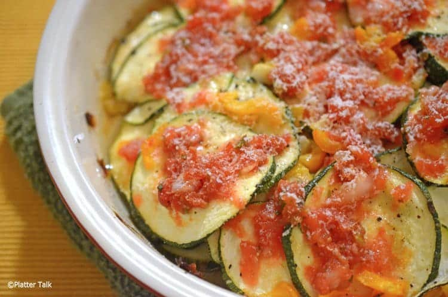

Zucchini Salsa

Description
Get ready for a quick and flavorful dinner that's as easy to make as it is delicious! Our Sizzling Salsa, Zucchini, and Sausage Skillet is the perfect one-pan wonder that will satisfy your taste buds and save you precious time in the kitchen.
Ingredients
- 1 pack of Johnsonville Sausage (or your sausage of choice)
- 1 jar of salsa
- 4-5 small Zucchini
Steps
- Peel Zucchini and cut into 1/4 inch coins
- Cut Sausage into 1/4 inch coins
- Cook sausage in pan on medium to high heat stir occasionally (approx. 7 minutes)
- Add zucchini and entire jar of salsa to pan with sausage and cover with a lid
- Cook for 10 minutes on medium heat or until zucchini is soft
- Serve hot in bowl